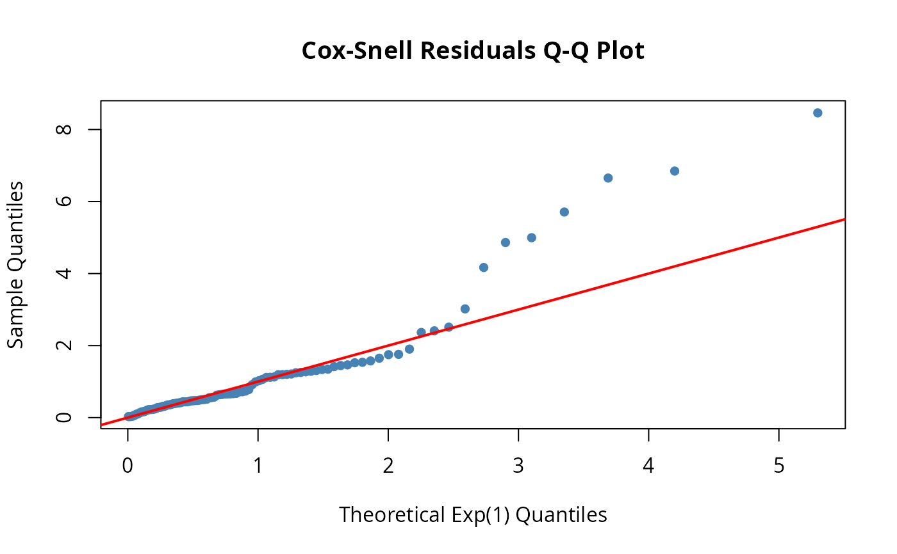
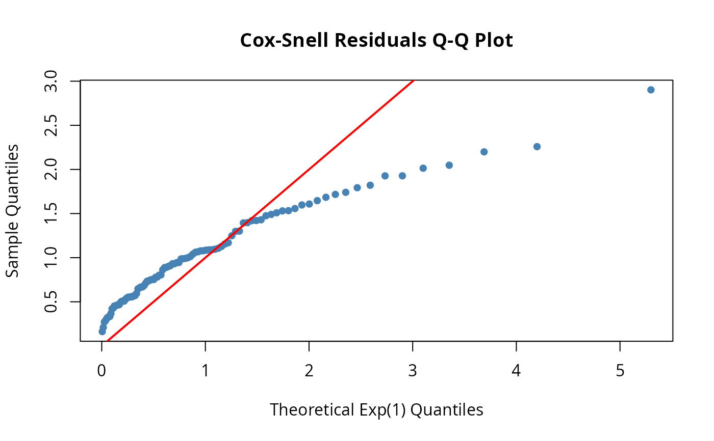

Creates a Q-Q plot comparing Cox-Snell residuals to the theoretical Exp(1) distribution. A good fit shows points along the diagonal.
Details
Cox-Snell residuals r_i = H(t_i) should follow an Exp(1) distribution if the model is correctly specified. Departure from the diagonal line in the Q-Q plot indicates model misspecification:
Points above the line: observations failed earlier than expected
Points below the line: observations survived longer than expected
Systematic curvature: wrong distributional form
Examples
# Check fit of exponential model
set.seed(42)
df <- data.frame(t = rexp(100, rate = 0.5), delta = 1)
exp_dist <- dfr_exponential(lambda = 0.5)
qqplot_residuals(exp_dist, df)

# Check fit with wrong model (Weibull data, exponential fit)
df_weib <- data.frame(t = sampler(dfr_weibull(shape = 2, scale = 5))(100), delta = 1)
exp_fit <- dfr_exponential(lambda = 1 / mean(df_weib$t)) # Moment estimate
qqplot_residuals(exp_fit, df_weib) # Should show systematic departure
